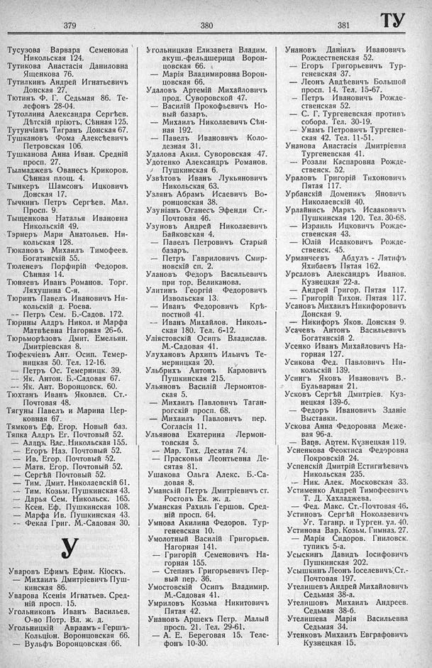

Лист источника 477
Скан

Распознанный текст
379
Тусузова Варвара Семеновна
Никольская 124.
Тутикова Анастасія Даниловна
Ященкова 76.
Тутилкинъ Андрей Игнатьевичъ
Донская 27.
Тютинъ Ф. Г. Седьмая 86. Те-
лефонъ 28-04.
Тутоллина Александра Сергѣев.
Дѣтскій пріютъ, Сѣнная 125.
Тутунчіанъ Тигранъ Донская 67.
Тушкановъ Фома Алексѣевичъ
Петровская 106.
Тушканова Анна Иван. Средній
просп. 27.
Тылмаджевъ Ованесъ Крикоров.
Сѣнная площ. 4.
Тынкеръ Шамсонъ Ицковичъ
Донская 17.
Тычкинъ Петръ Сергѣев. Мал.
Просп. 9.
Тыщенкова Наталья Ивановна
Никольскій 49.
Тэрнеръ Мари Анатольев. Ни-
кольская 128.
Тюкановъ Михаилъ Тимофеев.
Богатянскій 55.
Тюленевъ Порфирій Федоров.
Сѣнная 14.
Тюняевъ Иванъ Романов. Торг.
Ляхушина С-я.
Тюринъ Павелъ Ивановичъ Ни-
кольскій д. Роева.
— Петръ Сем. Б.-Садов. 172.
Тюрины Алдръ Никол. и Марфа
Матвѣевна Нагорная 26-б.
Тюрьморьзовъ Дмит. Емельян.
Дмитріевская 8.
Тюфекчіевъ Ант. Осип. Темер-
ницкая 50. Тел. 12-16.
— Петръ Ос. Темерницк. 39.
— Як. Антон. Б.-Садовая 67.
-- Як. Ант. Воронцовск. 60.
Тюхтанъ Иванъ Яковлев. Ст.-
Почтовая 48.
Тягуны Павелъ и Марина Цер-
ковная 67.
Тямковъ Еф. Егор. Новый баз.
Тяпка Алдръ Ег. Почтовый 52.
— Алдръ Вас. Никольская 155.
— Егоръ Наз. Почтовый 52.
— Ив. Егор. Почтовый 52.
— Матв. Егор. Почтовый 52.
— Сергѣй Почтовый 52.
— Тим. Дмит. Николаевскій 61.
-- Тим. Козьм. Пушкинская 43.
— Дарья Сем. Никольск. 165.
— Ксен. Еф. Пушкинская 108.
— Марфа Ив. Пушкинская 43.
-- Фекла Григ. М.-Садовая 30.
У
Уваровъ Ефимъ Ефим. Кіоскъ.
— Михаилъ Дмитріевичъ Пуш-
кинская 86.
Уварова Ксенія Игнатьев. Сред-
ній просп. 15.
Угольниковъ Иванъ Васильев.
О-во Потр. Вл. ж. д.
Угольницкій Авраамъ - Гершъ-
Кольціон. Воронцовская 66.
— Вульфъ Воронцовская 66.
380
Угольницкая Елизавета Владим.
акуш.-фельдшерица Ворон-
цовская 66.
— Марія Владимировна Ворон-
цовская 66.
Удаловъ Артемій Михайловичъ
прод. Суворовской 47.
— Василій Прокофьевичъ Но-
вый базаръ.
— Михаилъ Николаевичъ Сѣн-
ная 192.
— Павелъ Ивановичъ Коло-
дезная 31.
Удалова Акил. Суворовская 47.
Удотенко Александръ Романов.
Пушкинская 6.
Узвѣтовъ Иванъ Лукьяновичъ
Никольская 63.
Узлянъ Абрамъ Исаевичъ Во-
ронцовская 38.
Узуніанъ Оганесъ Эфенди Ст.-
Почтовая 46.
Узуновъ Андрей Николаевичъ
Байковская 4.
— Павелъ Петровичъ Старый
базаръ.
— Петръ Гавриловичъ Смир-
новскій сп. 2.
Улановъ Федоръ Васильевичъ
при тор. Великанова.
Улитинъ Георгій Федоровичъ
Извольская 13.
— Иванъ Федоровичъ Крѣ-
постной 41.
-- Иванъ Михайлов. Николь-
ская 180. Тел. 6-12.
Уліястовскій Осипъ Владислав.
М.-Садовая 41.
Улухановъ Архипъ Ильичъ Те-
мерницкая 20.
Ульбрихъ Антонъ Карловичъ
Пушкинская 215.
Ульяновъ Василій Лермонтов-
ская 5.
— Михаилъ Павловичъ Таган-
рогскій просп. 68.
— Михаилъ Павловичъ пер.
Согласія 11.
Ульянова Екатерина Лермон-
товская 5.
— Мар. Тих. Десятая 74.
— Прасковья Леонтьевна Де-
сятая 81.
Ушакова Ольга Алекс. Б.-Са-
довая 8.
Уманскій Петръ Дмитріевичъ ст.
Ростовъ Ек. ж. д.
Уманская Рахиль Гершов. Сред-
ній просп. 64.
Умнова Акилина Федоров. Тур-
геневская 10.
Умолотный Василій Григорьев.
Нагорная 141.
— Григорій Семеновичъ На-
горная 155.
— Степанъ Григорьевичъ Пер-
вый пер. 36.
Умостовскій Осипъ Владимир.
М.-Садовая 41.
Умриловъ Козьма Никитовичъ
Пятая 42.
Унановъ Аршекъ Петр. Малый
просп. 21. Тел. 29-61.
— А. Е. Береговая 15. Теле-
фонъ 10-30.
381 ТУ
Унановъ Даніилъ Ивановичъ
Рождественская 52.
— Егоръ Григорьевичъ Тур-
геневская 37.
— Леонъ Авдѣевичъ Большой
просп. 14. Тел. 15-67.
— Петръ Ивановичъ Рожде-
ственская 52.
— С. Г. Тургеневская противъ
собора. Тел. 30-19.
— Унамъ Петровичъ Тургенев-
ская 42. Тел. 11-51.
Унанова Анастасія Дмитріевна
Тургеневская 41.
— Розали Каспаровна Рожде-
ственск. 52.
Ураловъ Григорій Тихоновичъ
Пятая 117.
Урбанскій Доменикъ Яновичъ
Николаевскій 40.
Урлайнисъ Маркъ Исааковичъ
Пушкинская 120. Тел. 30-68.
— Израилъ Ицковичъ Рожде-
ственская 43.
— Юлій Исааковичъ Рожде-
ственск. 45.
Урманчеевъ Абдулъ - Лятифъ
Яхибаевъ Пятая 162.
Урсаловъ Александръ Иванов.
Кузнецкая 22-а.
— Андрей Григор. Пятая 117.
— Григорій Тихон. Пятая 117.
Усановъ Михаилъ Никифоровичъ
Донская 9.
— Никифоръ Яков. Донская 9.
Усачевъ Антонъ Васильевичъ
Богатянскій 2.
Усенко Иванъ Михайловичъ На-
горная 127.
Усикова Фед. Павловичъ Ни-
кольскій 139.
Усингъ Яковъ Ивановичъ В.-
Бульварная 21.
Усковъ Сергѣй Дмитріев. Куз-
нецкая 139-б.
— Федоръ Ивановичъ Зданіе
Выставки.
Ускова Анна Федоровна Меже-
вая 96-а.
— Варв. Артем. Кузнецкая 119.
Усненкова Феоктиса Федоровна
Покровскій 24.
Успенскій Дмитрій Естигнѣевичъ
Никольская 235.
-- Ник. Алек. Московская 33.
Устименко Андрей Тимофеевичъ
Т. Д. Хахладжева.
— Фед. Макс. Ст.-Почтовая 46.
Устиновъ Сергѣй Ноколаевичъ
Уг. Таганр. и Турген. ул. 40.
Устинова Вар. Козьм. Гимназ. 27.
— Марія Сидоров. Гниловск.
тупикъ 5-а.
Усыскинъ Давидъ Іосифовичъ
Пушкинская 202.
Усышкинъ Леонъ Іоселевичъ Ст.-
Почтовая 197.
Утелишевъ Андрей Михайловичъ
Седьмая 38-а.
Утелишовъ Михаилъ Андреев.
Седьмая 38-б.
Утелишева Марія Васильевна
Седьмая 34.
Утенковъ Михаилъ Евграфовичъ
Кузнецкая 15.